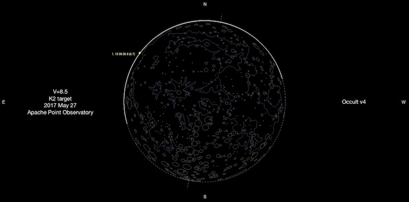

Stellar activity with GALEX
06 Mar 2017some cool figures from ISSI meeting, w/ thanks to Scott Flemming & Rachel Osten
some cool figures from ISSI meeting, w/ thanks to Scott Flemming & Rachel Osten

described by the Occult software maker, Dave Herald, in this forum comment (scroll up), as an idea pitched by James Lloyd
use drift scan method described by Fors et. al (2001)
There are some awesome surveys of variability that are being under utilized. One such gem is OGLE, which now has a catalog of over 48k eclipsing binary star systems in the SMC and LMC!
With such a large sample, and near complete coverage of SMC/LMC (and in-between….) it would be amazing to see: are there variations of the eclipsing binary star population over an entire galaxy?
To do so, you might combine this variability survey with other spatial surveys that have traced the star formation history of the LMC/SMC… here’s a more recent paper on the subject!
We (or at least I) might naively expect that the orbital period distribution would be changed as a function of mean age of the stars in a spatial bin - in other words, dynamic processing would harden (shorten) the periods over time. Long period, detached systems would become more rare over time, and so also increasing the fraction of W UMa type systems.
Finally, working in the temporal-spatial domain is good practice for the forthcoming “LSST era”. As they say, publish early, publish often!